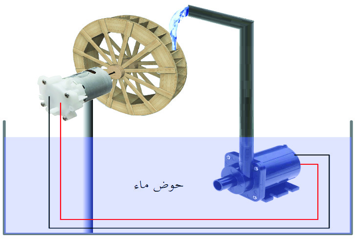

المضخة والتوربين والمولّد
تستهلك المضخة كهرباء لرفع الماء. وعند سقوطه يمكن أن يدير توربينًا ومولّدًا لاسترجاع جزء من الطاقة. ينتقل الباقي إلى المحيط على هيئة حرارة وصوت وحركة غير مستفاد منها.
افحص فكرة النافورة في الكتاب، واستخدم ميزانية الطاقة لتفسّر لماذا تحتاج إلى تغذية خارجية.
تعلّم وافهم
تستهلك المضخة كهرباء لرفع الماء. وعند سقوطه يمكن أن يدير توربينًا ومولّدًا لاسترجاع جزء من الطاقة. ينتقل الباقي إلى المحيط على هيئة حرارة وصوت وحركة غير مستفاد منها.
لا تستمر النافورة بتغذية مضختها من ماء النافورة وحده. تبدأ بطاقة مخزنة أو طاقة واردة من الخارج؛ ومع كل تحويل تقل الطاقة القابلة لإعادة الاستخدام.
نختبر صياغة نشاط ص٢٠ علميًا: نصمّم نموذجًا ذا مصدر خارجي واضح، مثل لوح شمسي أو بطارية مناسبة. لا نعرضه بوصفه جهازًا ذاتي التشغيل.
استقصاء تفاعلي
من الشاشة إلى العمل

دفتر النشاط
لا تُرسل الإجابات إلى المعلم تلقائيًا. احفظ نسخة قبل إغلاق الصفحة، وامسح مسودتك عند استخدام جهاز مشترك.
المصدر الأساسي: كتاب التكنولوجيا للصف التاسع، الجزء الأول، الدرس الثاني، الصفحات ١٣–٢١. الرسوم التفاعلية تبسيط تعليمي وليست أجهزة قياس.